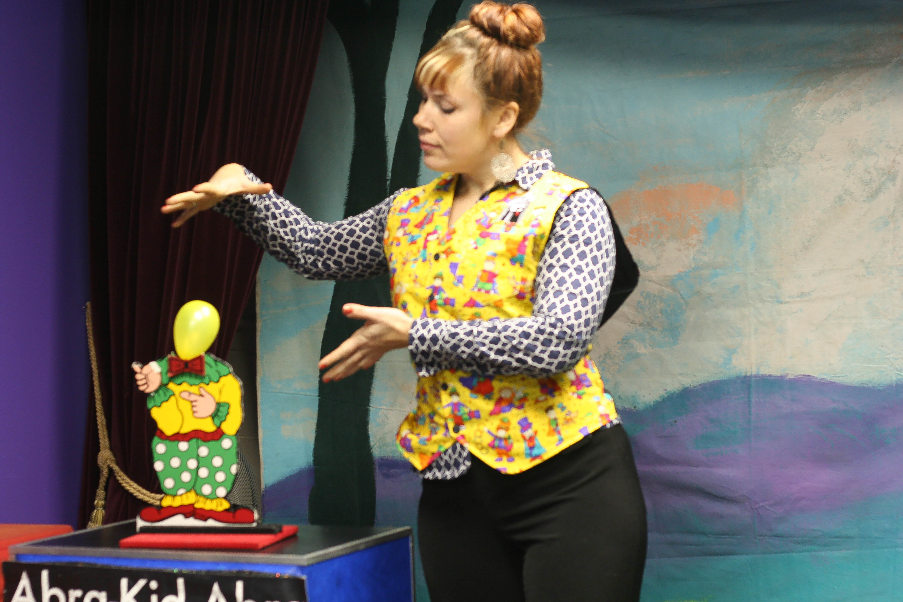
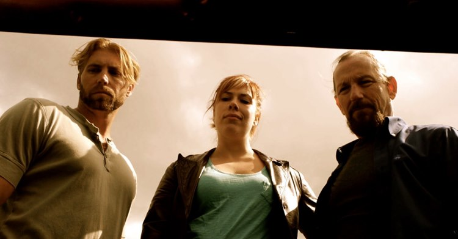

Writer

The pandemic has pushed my pivot to Literary Mercenary. I write: website copy, personal bios, client emails, donation letters, press releases, articles, reformat academic sources, marketing copy, and more.
Massage Therapy


I've been a massage therapist since 2015. I have a studio in Maplewood, and I specialize in inclusive, evidence-based, trauma-informed care.
Restaurants
- Server
- Bartender
- Prep Cook
Front of House
From foie gras to french fries, I've served this city's billionaires and its regular folks.
If you've ordered an alcoholic beverage in St. Louis from 2000-2016, I've probably handed it to you somewhere.
Back of House
Sometimes you need a break from smiling at people, and just need to chop five gallons of onions.
Magician
I spent a short amount of time as a magician and teaching children magic and circus skills. It sounds like a lot of fun, but those children were monsters so great.

Violin Shop
In between things, I spent some time doing odd jobs at a violin shop. I photographed violins, built shelves, and dusted... a lot.
Photographer

I've done a lot of food photography for various chefs and restaurants, been published in 'Shop Like A Chef', and hired to do product shoots for different brands.
Actor
Many years in both theater and film means I can put together a costume for pretty much anything with items in my closet and that I've been covered in fake blood so. many. times.
Event Coordinator
My biggest event brought about 4000 people down to the riverfront under The Arch to check out local businesses who were redefining self-care.